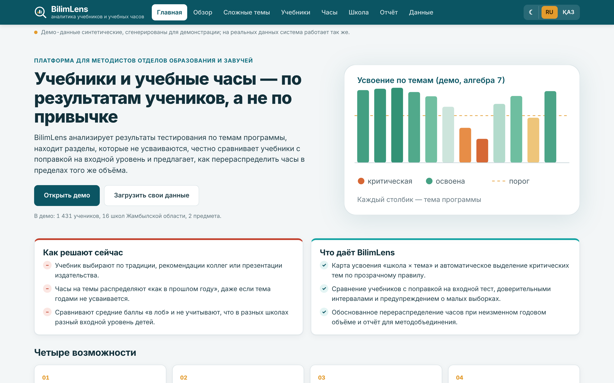
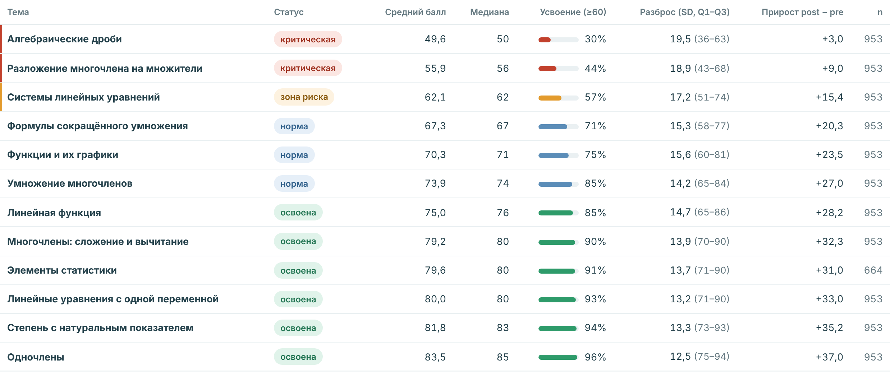
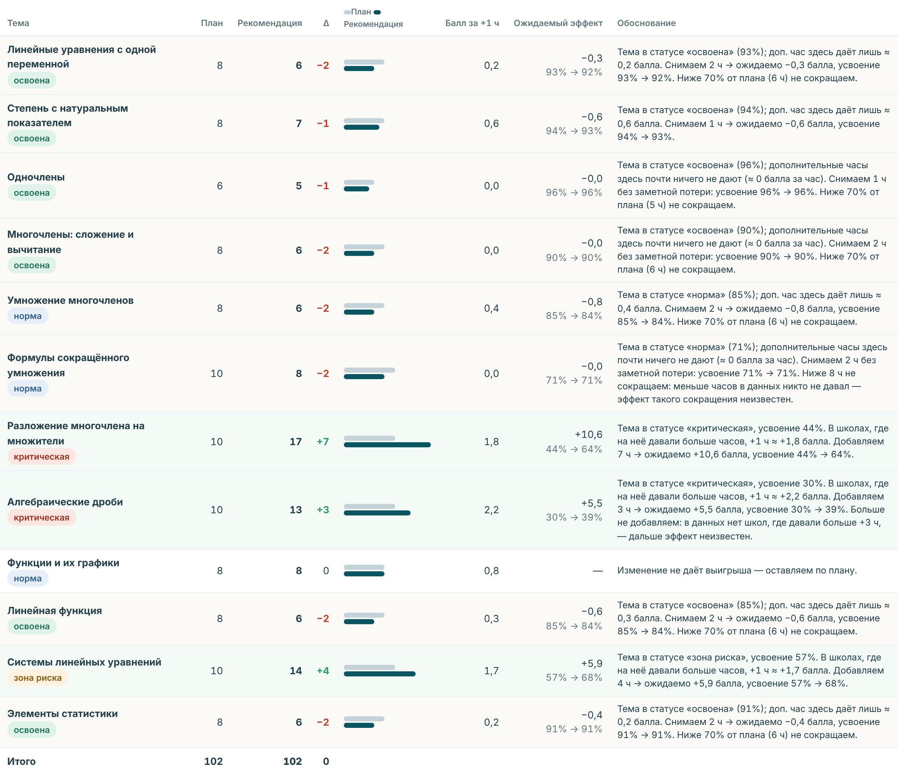

Оқулықтар мен оқу сағаттары туралы шешімдер — оқушылардың өлшенетін нәтижелері бойынша
Кейс 1 · Data-Driven Curriculum · интеллектуальная система оценки эффективности учебников и учебных программ

Мәселе: шешімдер «дәстүр бойынша» қабылданады
По привычке, мнению коллег или презентации издательства. Связь с результатами учеников не проверяется.
КТП переносится «как в прошлом году», даже если тема годами не усваивается, а на освоенные темы уходят лишние часы.
Средние баллы сравнивают напрямую и не учитывают, что в разные школы приходят дети с разным входным уровнем.
Пайдаланушы: әдіскер және оқу ісінің меңгерушісі
Шешім: BilimLens
Веб-платформа, которая превращает результаты тестирования по темам в обоснованные решения об учебниках и учебных часах — с прозрачной статистикой и на двух языках.
Средний балл, медиана, разброс, доля усвоивших, прирост от входного теста.
Автоклассификация «критическая / риск / норма / освоена» и анализ заданий.
С поправкой на входной уровень, 95% CI, Cohen’s d, защита от малых выборок.
Перераспределение при фиксированных 102 ч, объяснение и симулятор «что если».
Только анализ: тесты проводятся как обычно, в систему загружаются результаты (CSV/Excel). Интерфейс RU/KZ, работает в браузере без установки.
Демо: қай тақырыптар меңгерілмейді

учеников усвоили тему «Алгебраические дроби» — критическая тема (порог 60 баллов).
Правило: критическая — усвоение < 50% и средний балл ниже медианы по темам.
Басты нәтиже: оқулықтарды тікелей салыстыру қате
«В лоб» — средний итоговый балл
Лидер: Учебник А
учитываем
входной тест
входной балл школ
с учебником А: 54,2
у остальных: 42,4
С поправкой на входной уровень
Лидер: Учебник Б (+3,5 балла к А, 95% CI [2,8; 4,2])
Демо: сағаттар бойынша ұсыныстар

годовой объём не меняется; перераспределяется 14 ч
Эффект часа оценён по школам, которые сами отклонялись от плана; освоенные темы не опускаются ниже 70% плана и наблюдаемого минимума. Это оценка, а не гарантия — проверяется в пилоте.
Қалай жұмыс істейді
CSV/Excel: школа, учебник, ученик (обезличенный код), тема, часы план/факт, входной и итоговый балл. Опционально — ответы по заданиям 0/1.
Усвоение (доля ≥ порога), медиана, разброс, прирост; индекс трудности p и дискриминативность r заданий.
Регрессия итоговый ~ входной + учебник; 95% CI, Cohen’s d; оценка «балл за час» по отклонениям от плана.
Классификация тем, вывод по учебникам словами, план часов с обоснованием, PDF-отчёт.
Пример строки входного файла
Алгебра, 7 класс, S07, Школа №5, Жуалынский район, S07-7А, Учебник Б, S07-7А-12, T08, Алгебраические дроби, 10, 12, 44, 58Неліктен бұл қорытындыларға сенуге болады
Сравниваем учеников с одинаковым входным баллом, а не «сильные школы против слабых». Именно это разворачивает вывод: А «в лоб» → Б с поправкой.
Каждая разница — с 95% доверительным интервалом и Cohen’s d. Вывод «лучше» — только если интервал не включает 0 и d ≥ 0,2.
При n < 30 или слишком широком интервале система пишет «недостаточно данных», а часы не экстраполирует за пределы того, что реально наблюдалось.
Правила и формулы открыты в блоках «Как это посчитано». Код аналитики покрыт тестами; демо-данные синтетические, генератор детерминированный.
Енгізу: Жамбыл облысындағы пилот
Алгебра 7 класса, 2–3 района, 15–20 школ. Шаблон выгрузки результатов СОР/СОЧ и пробных тестов из электронного журнала или Excel.
Отчёт по району: критические темы, сравнение учебников, проект перераспределения часов. Обсуждение на методобъединении.
Часть школ корректирует КТП по рекомендации, часть работает по плану. Сравнение по итогам четверти.
Все районы области, физика/химия/казахский язык; затем другие регионы. Данные — только обезличенные коды учеников.
Нужно от управления образования: доступ к выгрузке результатов, 1 ответственный методист на район, согласование формата данных.
Құндылық моделі
Закупка учебников и распределение часов на основании результатов; единый отчёт по области вместо ручных таблиц.
Модель: годовая лицензия на регион / госзаказ.
Готовый анализ после каждого СОЧ, план КТП с обоснованием, проверка качества заданий.
Бесплатно для школ в рамках региональной лицензии.
Обратная связь: на каких темах учебник проигрывает, какие разделы переписать.
Платная агрегированная аналитика без доступа к данным учеников.
Альтернатива финансирования на старте: грант / акселератор EdTech, пилот за счёт регионального бюджета на цифровизацию.
Даму жоспары
4 модуля анализа, импорт CSV/Excel с валидацией, RU/KZ, отчёт PDF, карточка школы, симулятор часов.
Импорт из электронных журналов, личные кабинеты отделов образования, история по годам.
Многоуровневые модели (ученик–класс–школа), банк заданий с анализом по заданиям, больше предметов.
Все регионы, рекомендации по методике для каждой критической темы, открытые обезличенные датасеты.
Принцип развития: каждая новая рекомендация сначала проверяется на пилотных школах и сравнивается с контрольной группой.
Демоны ашыңыз — бұл таныстырылымдағы барлық сандар сонда есептелген
Демо-данные синтетические (953 учеников, 16 школ, алгебра 7 класс), сгенерированы для демонстрации; на реальных данных система работает так же.
Сканируйте, чтобы открыть MVP